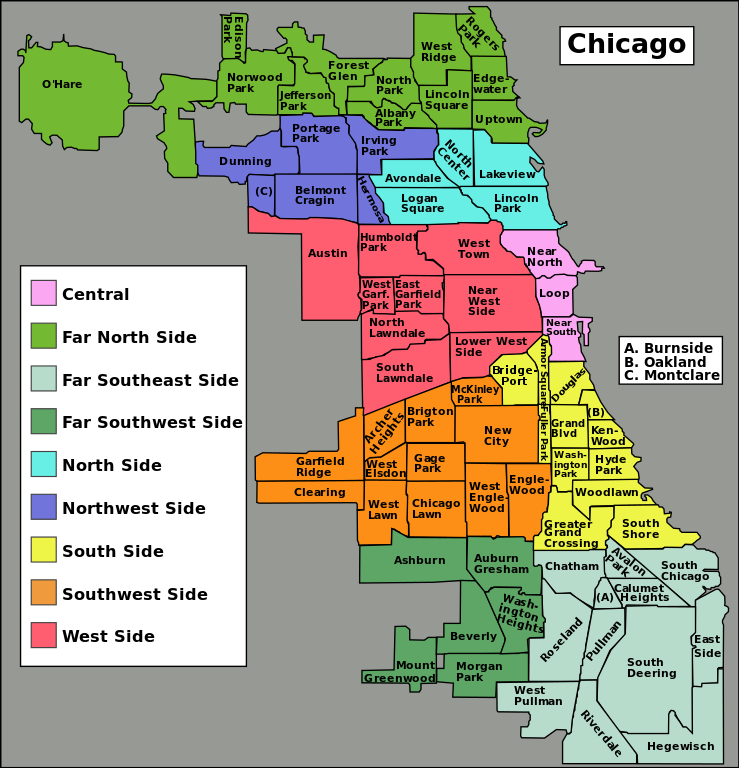
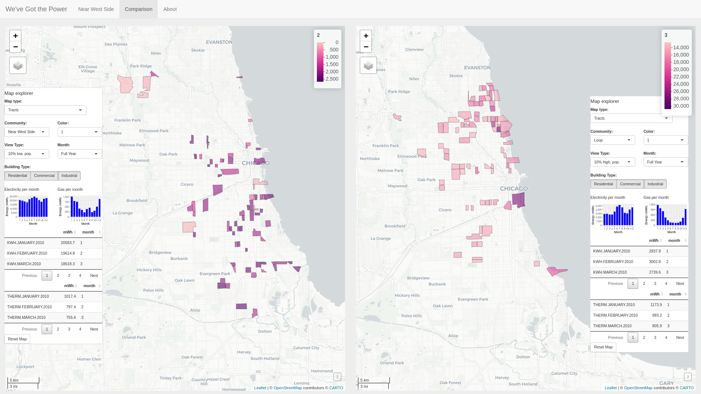
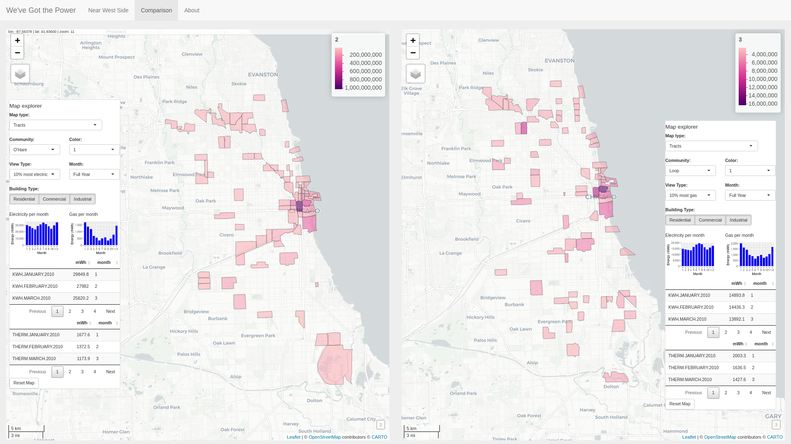
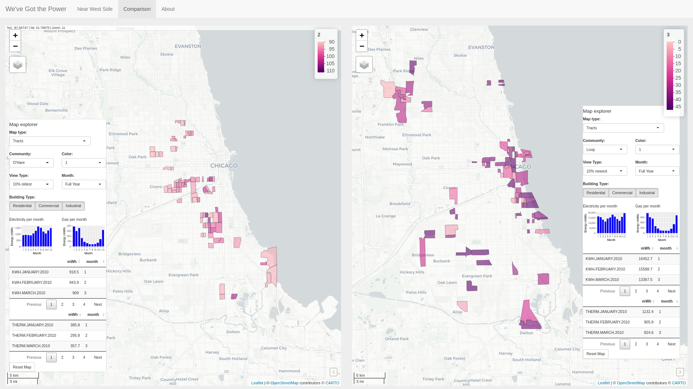

CS 424 Spring 2021
David Shumway
Introduction | Data | Interesting notes on the data
Project 3 - "We've Got the Power": Interesting notes on the data
There is an empty neighborhood in Chicago beside the O'Hare Airport neighborhood (Figure 1).

Figure 1: Map of Chicago neighborhoods [1].
According the the US Census, there are very few migrant worker housing units in Chicago. Figure 2 highlights the few migrant worker housing units in the city, according to the Census.
Figure 2: Comparing migrant worker housing units near O'Hare Airport in Chicago, Illinois (left) and throughout Cook County (right).
While gas use always generally is high in the winter and low in the summer, electricity use is more sporadic. Electricity use is typically highest in the summer and lowest in the spring and fall, while November and December appear to have high use.
The oldest residents appear to live on the outskirts of the county, while the youngest residents live closer to the center of the city (Figure 3).

Figure 3: Comparing top 10% oldest resident tracts (left) and top 10% youngest resident tracts (right). Older residents tend to live farther from the city, while younger residents live closer.
The tracts in Cook County with the lowest population appear to reliably fall in the southern part of the city, while the tracts with the highest population appear to reliably fall in northern part of the city (Figure 4).

Figure 4: Comparing 10 percent of tracts with lowest population (left) and 10 percent of tracts with highest population (right).
Tracts with high electricity use typically also have high gas use (Figure 5).

Figure 5: Comparing 10 percent of tracts with highest electricity use (left) and 10 percent of tracts with highest gas use (right).
Areas of the city with older buildings have far less energy usage than areas of the city with newer buildings (Figure 6). While gas usage tended to be around three times more per month in the parts of the city with the newest buildings, electricity usage tended to be around fifteen times more per month. Tracts with the oldest buildings were largely located in three distinct west-southern areas of the city.

Figure 6: Comparing 10 percent of tracts with oldest buildings (left) and 10 percent of tracts with newest buildings (right).
Data for building types appears to be rough-cut. For example, in the downtown loop area, little or few Census blocks are marked as residential (Figure 7). This is in spite of a number of corresponding downtown loop rows in the dataset marked as commercial which include residential data. Similarly, there are very few rows in the dataset containing Industrial building data.
Figure 7: Comparing building type (left) and total population (right). The building type attribute appears to be haphazardly utilized. While there are many blocks in the Loop neighborhood which have residential population values, few blocks there have the Residential building type attribute.
Population data appears to be low throughout the dataset. According to Wikipedia, the population of Chicago alone in 2010 was 2.6 million, while in the dataset the total population (based on totals shown in summary neighborhood rows) is only 1.4 million. Many Census blocks in the dataset contain no values of 0 of empty (NA) for population.
References
[1] https://upload.wikimedia.org/wikipedia/commons/thumb/a/ac/Chicago_community_areas_map.svg/739px-Chicago_community_areas_map.svg.png